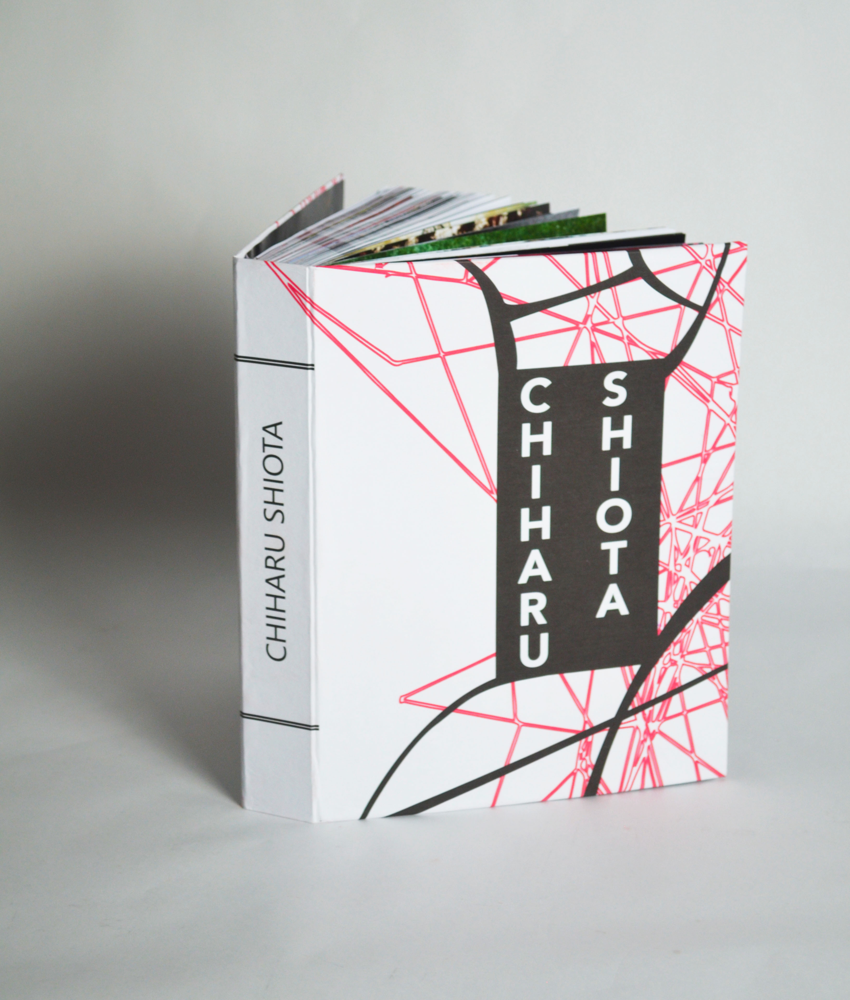
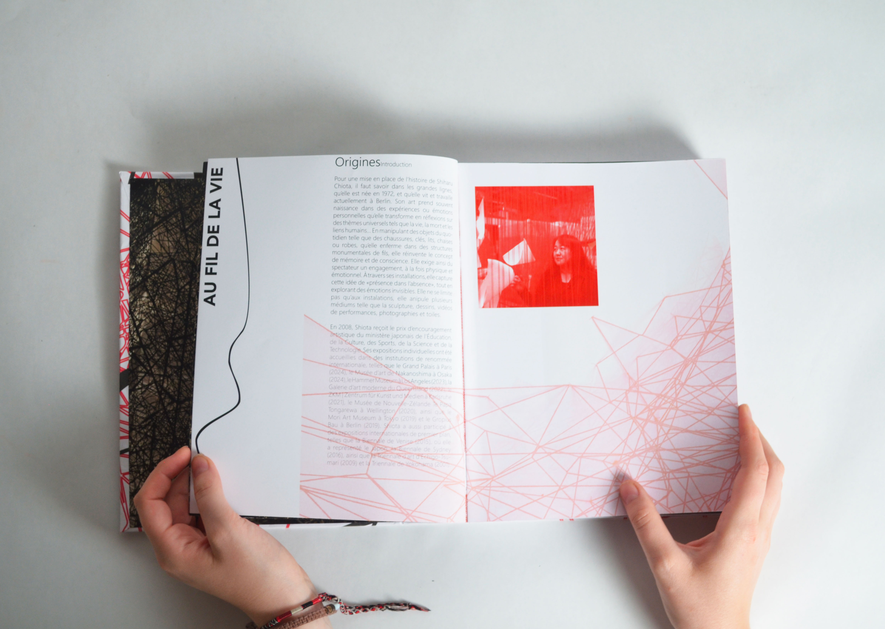
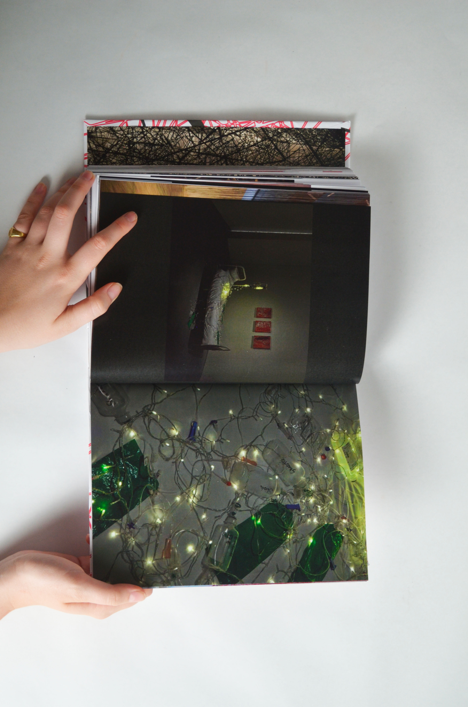
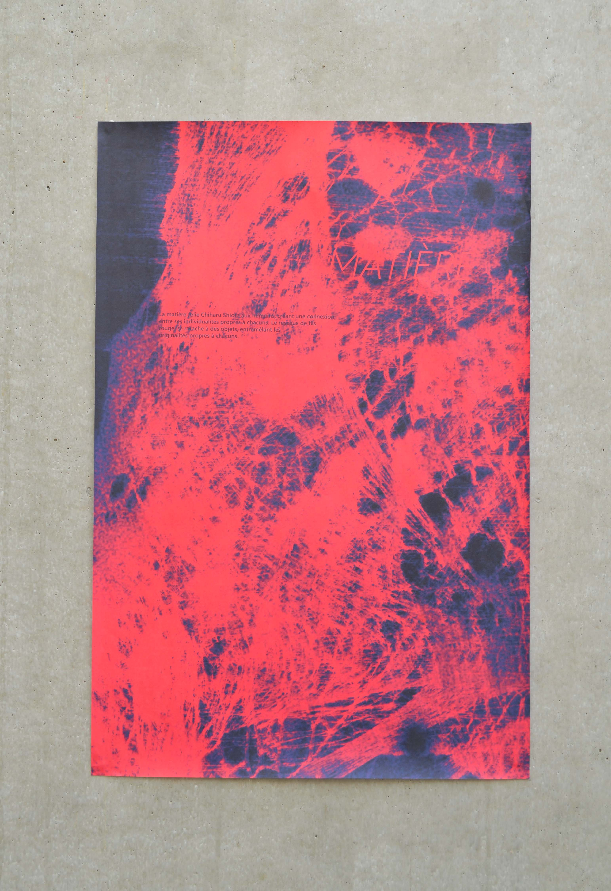
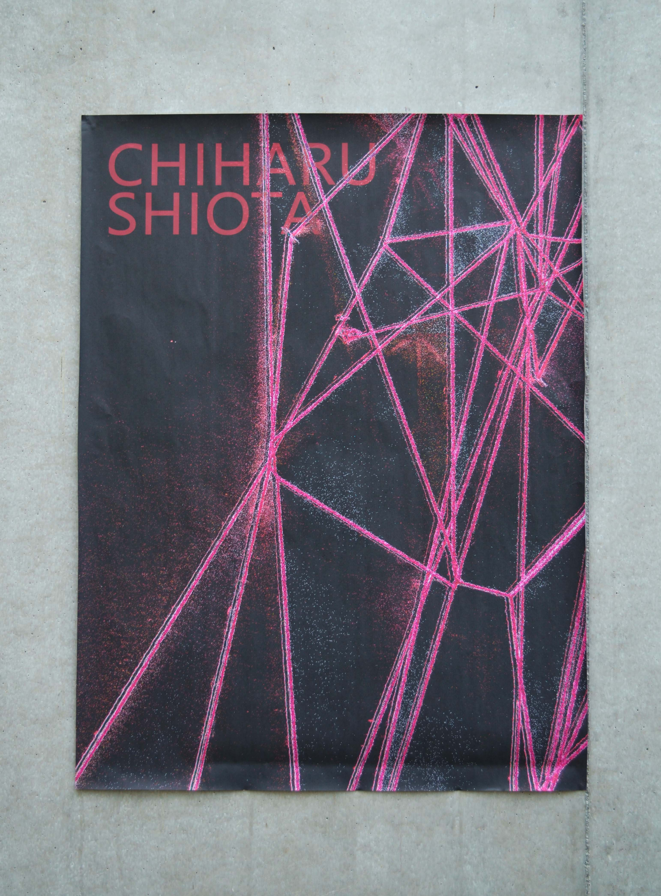
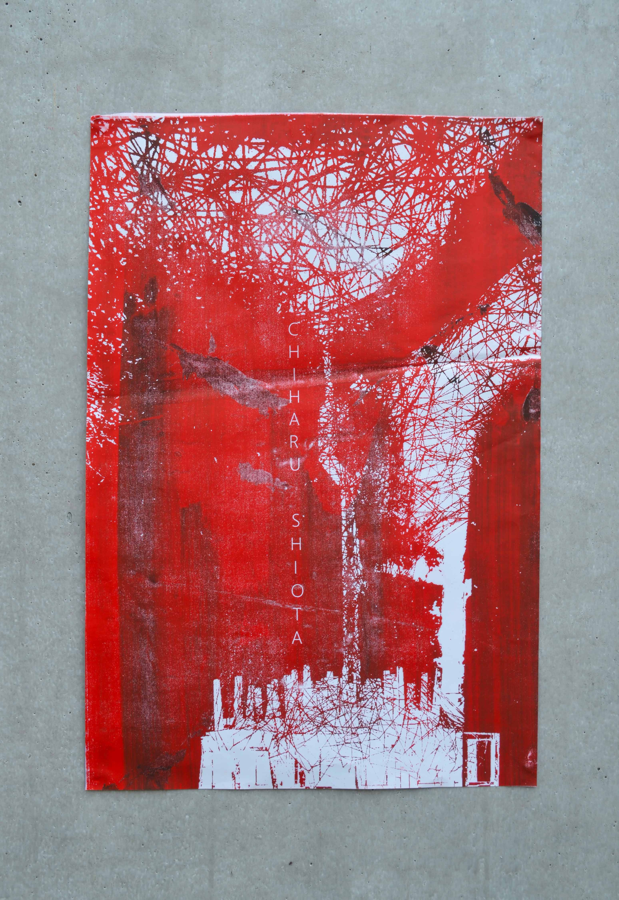
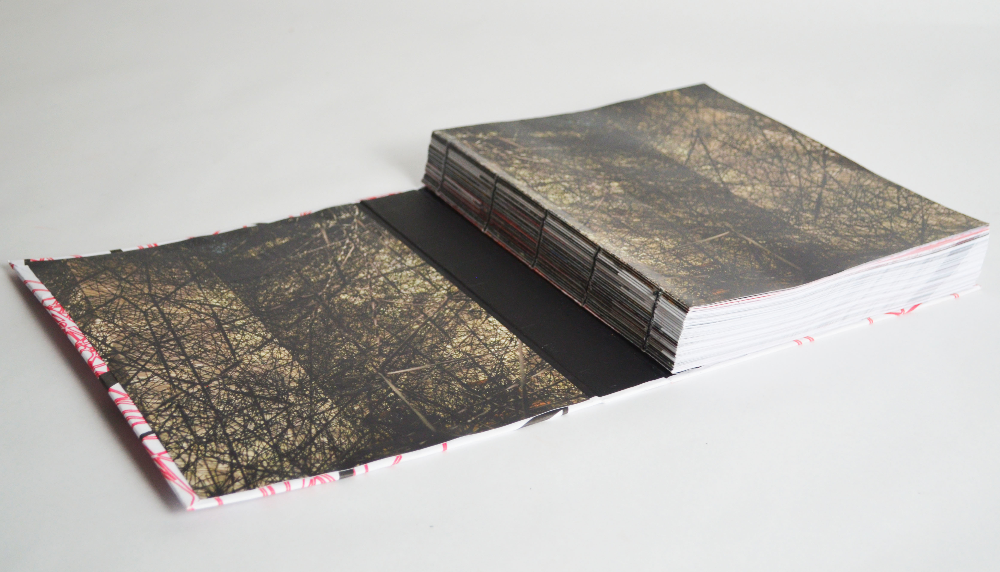

Coffret d'artiste

Le coffret d’artiste est basé sur l’artiste Chiharu Shiota. On y retrouve une édition principale accompagnée d’une plus petite, un dépliant, un tote bag sérigraphié, une illustration, deux posters et trois dépliants d’ombres.
Mon édition principale, au format 280 × 210 mm, en reliure suisse, de 416 pages, regroupe dans les premières pages sa biographie, puis sa manière de travailler au long de sa carrière jusqu’à maintenant. Par la suite sont répertoriées la plupart de ses œuvres à travers plusieurs expositions dans le monde. Dans mon autre édition, j’ai voulu appuyer sur sa rupture entre la peinture et les installations, dans un format A5, reliure agrafée, avec une couverture en rhodoid rouge qui aplatit la couverture comme la peinture est aplatie par rapport aux installations.
Par la suite, une affiche au format 60 × 80 cm sur l’artiste, une autre en 40 × 60 cm également sur l’artiste en sérigraphie, le dépliant sur les matériaux et les textures, A5 fermé et 40 × 60 cm ouvert, et enfin une illustration au format A4.






